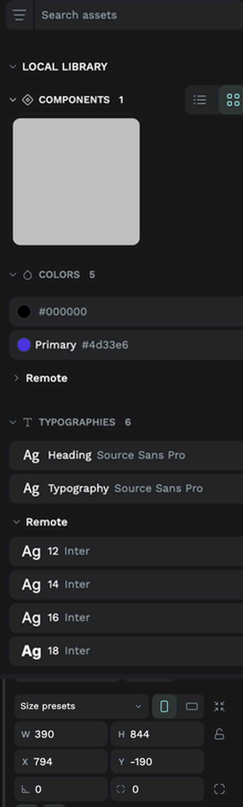

하네스톤 #1 우승 회고
AI는 디자인을
더럽게 못합니다
그래서 디자인 하네스를 만들었습니다
?
무언가를 만들 때 가장 큰 적이 뭐냐고 물으면,
저는 디자인이라고 답합니다
증상
코드는 나오는데, 화면이 이상합니다
- 시키면 코드는 곧잘 나옵니다. 돌아가고, 에러도 없습니다
- 그런데 화면을 열면 버튼 크기가 제각각이고 간격이 들쭉날쭉합니다
- 딱 집어 말하긴 어려운데, “AI가 만들었네” 소리가 나옵니다
원인
“돌아가는지”는 알아도 “예쁜지”는 모릅니다
1
작동은 판정된다
테스트가 통과했나, 에러가 났나.
답이 정해져 있어 기계가 확인합니다
2
예쁨은 판정이 안 된다
“이게 예쁜가?”에는 PASS/FAIL이
없습니다. 그래서 그냥 넘어갑니다
3
화면이 마지막 관문
사람 없이 코드 짜는 것보다
화면을 끝내는 게 훨씬 어렵습니다
01
WHY HARNESS
디자인 하네스가
필요하다
모델을 바꾸는 게 아니라, 모델이 일하는 틀을 바꾼다
하네스란
AI를 바꾸는 게 아니라, 일하는 틀을 바꿉니다
- 같은 사람도 혼자 일할 때와 리뷰·체크리스트가 있는 팀에서 결과가 다릅니다
- 하네스는 AI한테 그 팀 환경을 만들어주는 겁니다
- 순서를 정하고 · 단계마다 산출물을 남기고 · 검사할 에이전트를 붙인다
“그냥 좋은 모델 쓰면 되지 않나요?” — 그 얘기는 뒤에서 다시 하겠습니다. 답은 아니오에 가깝습니다.
대회
하네스만으로 겨루는 대회에 나갔습니다
주최
바이브마피아클럽
2026.08.01 · AI Native 디자인 해커톤
PRD 비공개
심사 직전까지 미공개 +
당일 교체. 미리 못 만듭니다
조건
명령어 한 줄 → 무인 실행
중간 개입 금지
사람이 못 끼어든다는 건, 하네스가 견고한 만큼만 결과가 나온다는 뜻입니다.
결과
1조 우승 — 명령어 한 줄로 나온 화면들
전부 12개 화면 중 6개입니다. 손으로 그린 화면은 하나도 없습니다.
고백
저는 화면을 만든 사람이 아닙니다
- 조장은 이동욱 님, 팀에 UX/UI 전문가가 있었습니다
- 제 몫은 둘. 전문가 노하우를 에이전트 지침으로 번역하는 일, 그리고 전날 밤 리허설
- 오늘 공유하는 건 “제가 만든 것”이 아니라 번역하면서 배운 것입니다
02
RULES
예쁜 디자인에도
규칙이 있지 않을까
감각이라면 못 시킨다. 규칙이라면 시킬 수 있다
번역
“예쁘게 만들어줘”는 지시가 아니라 소원입니다
이렇게 바꾼다
- 좌우 여백은 전 화면에서 하나의 값
- 글자 크기는 정해둔 5단 밖으로 안 나간다
- 색은 7개 예산 안에서만
- 목록은 최소 4행
신입 디자이너한테 “예쁘게 해와”라고 하면 못 알아듣습니다. 에이전트도 똑같습니다.
!
예쁨은 창의성이 아니었습니다
일관성 + 위계 + 실물감이었습니다
그리고 셋 다 규칙으로 강제할 수 있습니다
일관성
헤더·여백·탭바가 같으면, 다른 화면도 한 앱으로 보입니다
세 화면의 상단 높이·좌우 여백·모서리 둥글기가 전부 같은 값입니다. 통일감의 8할이 여기서 나옵니다.
✓
규칙은 판정 가능한 문장이어야 합니다
“간격을 일관되게” → 취향입니다
“8의 배수가 아닌 간격이 있는가” → PASS / FAIL이 나옵니다
03
THE BIG THREE
제일 컸던 셋
컴포넌트 · 고객 여정 · 경쟁사 분석
3
컴포넌트 · 고객 여정 · 경쟁사 분석
나머지 규칙을 다 지켜도, 이 셋이 없으면 “잘 정돈된 남의 화면”이 나옵니다
① 컴포넌트
목수는 매번 나무를 새로 재단하지 않습니다
- 가구를 만들 때 규격 자재를 조립합니다. 매번 톱질부터 하지 않습니다
- 화면도 같습니다. 부품을 먼저 만들고, 화면은 조립만 합니다
- 순서가 뒤집히면 버튼이 필요할 때마다 새로 그립니다 — 그래서 화면마다 다르게 생깁니다
① 컴포넌트
번호를 못 남긴 부품은, 만든 게 아니다
항공권 카드 컴포넌트 — 검색 결과 · 비교 · 운임 화면에 같은 부품이 그대로 들어갑니다
- 부품마다 일련번호를 붙이고 목록에 남긴다
- 화면 단계에서 새 부품 생성 금지 — 없으면 부품 단계로 되돌아간다
① 컴포넌트
부품을 먼저 만들면 셋이 따라옵니다
1
일관성이 공짜
같은 부품을 쓰니
같게 생길 수밖에 없습니다
2
검사가 싸진다
화면 20개가 아니라
부품 8개만 보면 됩니다
3
한 번만 고친다
부품 하나 고치면 끝.
화면을 돌아다니지 않습니다
② 고객 여정
화면 목록이 아니라, 사용자가 걷는 길
화면 하나하나가 멀쩡해도 순서가 없으면 앱이 안 됩니다.
② 고객 여정
그 길을 걷는 사람을 딱 한 명으로 정합니다
- “여행 앱 사용자”는 사람이 아닙니다. 아무 결정도 못 내리게 하는 말입니다
- 타깃 한 명을 정하고 화면 상단 3섹션의 우선순위만 결정합니다
- 여기선 날짜 스크러버가 1순위였습니다 — “이틀 앞당기면 2만원 더 싸요”
- 페르소나 문서는 안 만듭니다. 결정 결과만 뼈대에 반영하고 근거 한 줄
“
“당근이 증권 앱을 만든다면,
화면에 내 주변 사람들이 산 종목이 나와야 당근답습니다”
참고할 건 UI가 아니라, 그 서비스가 세상에서 차지한 자리입니다
팀 UX/UI 전문가
③ 경쟁사
그래서 경쟁사를 세 갈래로 동시에 팠습니다
시간이 제일 많이 드는 단계라 병렬로 돌립니다. 겉(치수·색)과 속(무엇을 파는가)을 따로 기록합니다.
③ 경쟁사
베끼는 게 아니라, 문법을 가져와 우리 도메인에 다시 씁니다
Skyscanner — 날짜별 최저가 캘린더
우리 결과 — 날짜 가격 스크러버
“언제 가면 얼마나 싼가”라는 소구는 가져오되, 캘린더 그리드가 아니라 스크러버 한 줄로 압축했습니다.
③ 경쟁사
감도는 실측에서 나옵니다

Penpot ASSETS 실측 — COLORS 5 · Inter 12/14/16/18 · W 390
눈으로 보고 짐작한 값이 아닙니다. 재는 순간 그게 그대로 지침이 됩니다.
③ 경쟁사
없는 건 발명하지 말고 파생시킵니다
- 당근에는 주가 등락을 표시할 빨강/파랑이 없습니다. 증권 앱엔 필요한데요
- 여기서 AI를 풀어두면 새 색·새 모양을 발명하고 브랜드가 깨집니다
- 그래서 추가 허용은 딱 2색. 주조색은 버튼·활성탭 자리를 지킵니다
원칙 한 줄 — 새 값을 만들지 말고 기존 값에서 파생시킨다.
04
HOW
하네스는
이렇게 만들었습니다
각 단계는 다음 단계를 구속하는 산출물을 낸다
파이프라인
11단계를, 성격이 다른 5덩어리로
1
읽기
PRD에서 화면 목록과 고객 여정을 뽑는다
→
→
→
→
5
조립·검사
화면은 조립만. 다른 에이전트가 채점
구속하지 않는 산출물은 장식입니다. “왜 이 단계가 있냐”에 답을 못 합니다.
가조립
비싼 실패 전에, 싼 실패를 먼저 합니다
- 부품을 제대로 만들기 전에 HTML로 화면을 대충 조립합니다
- 목적은 예쁜 화면이 아니라 빨리 틀리는 것
- 종이에 스케치하고 나서 목재를 자르는 것과 같습니다
장치
만든 놈이 채점하면, 같은 실수가 반복됩니다
- 화면을 만드는 에이전트와 평가하는 에이전트를 아예 분리했습니다
- 평가 쪽은 제작 쪽의 자기 보고서를 일부러 읽지 않습니다. 결과물만 봅니다
- 보고서를 읽는 순간 “이건 이래서 이렇게 했다”는 변명에 설득당하니까요
사람도 똑같습니다. 자기 글 오타는 안 보입니다.
중간 검토
검토를 중간중간 넣어라 — 이게 없으면 나머지가 무의미합니다
이 다섯 장이 검토 게이트의 증거입니다. 끝에 한 번만 봤으면 절대 안 만들었을 화면들입니다.
중간 검토
관문은 통과/실패만 냅니다
- 화면 목록이 맞나 → 부품이 다 번호가 있나 → 화면이 규칙을 지켰나
- 실패하면 그 단계로 되돌아갑니다. 다음으로 못 넘어갑니다
- 관문이 없으면 에이전트는 틀린 걸 들고 끝까지 갑니다 — 무인 실행의 기본 성질입니다
루프
지적을 하나씩 고치지 않습니다
- 지적 20개를 그 자리에서 하나씩 고치면, 다음에 또 20개 나옵니다
- 비슷한 원인끼리 묶습니다. “간격 틀린 곳 7개”는 사실 문제 하나입니다
- 묶은 원인을 상위 단계 지침에 반영하고 다시 돌립니다. 최대 3회
긁힌 자국을 메우는 게 아니라 사포질 방식을 바꾸는 겁니다. 사람이 없을 때 품질이 오르는 유일한 경로.
05
FAILURES
무인 실행이
무너지는 지점
셋 다 코드는 멀쩡했습니다
무음 실패
제일 무서운 건, 실패처럼 안 생긴 실패입니다
- 에러가 나면 오히려 낫습니다. 알아채고 고칠 수 있으니까요
- 무음 실패는 에러 없이, 성공한 척하고, 실제로는 아무 일도 안 일어난 겁니다
- 영수증은 나왔는데 결제가 안 된 상태입니다. 계산대에선 아무도 모릅니다
실물
토큰 바인딩이 조용히 실패했습니다
- 색에 이름을 붙이고 도형을 그 이름에 묶는 작업. 에러 없이 통과했고 색도 눈으로는 맞았습니다
- 그런데 다시 읽어보니 묶인 게 하나도 없었습니다. 값만 우연히 맞았던 겁니다
- 협업자가 변수값을 바꿔도 화면은 반응하지 않습니다. 실사용에서 발견 불가
전날 밤 리허설에서 발견했습니다. 안 해봤으면 그대로 제출했습니다.
✓
그래서 넣은 것 — 자기점검
“했다”는 보고를 믿지 않고, 결과를 되읽어서 진짜 들어갔는지 확인한다
당일
와이파이가 우리 서버를 막고 있었습니다
- 행사장 네트워크가 저희 디자인 서버로 가는 통신을 차단하고 있었습니다
- 비밀번호를 잘못 넣은 줄 알고 한참 헤맸고, 결국 집에 있는 맥미니를 경유해 우회했습니다
- 무인 실행을 준비할 때 정작 챙길 건 코드가 아니라 네트워크 경로였습니다
당일
남의 작업 위에 그릴 뻔했습니다
한 파일 안에 팀원별 페이지가 나란히 — 잘못 고르면 그 즉시 남의 화면 위에 그립니다
- 페이지 전환이 반영되기 전에 그리기가 시작돼 이전 페이지에 도형이 생겼습니다
- 혼자 쓰는 파일이면 사고로 끝나지만, 공용 파일이면 남의 작업이 오염됩니다
세 실패의 공통점
셋 다 코드는 멀쩡했습니다
- 셋 다 성공한 것처럼 보였습니다 — 에러도, 경고도 없었습니다
- 셋 다 직접 다시 확인해서 발견했습니다. 안 봤으면 그대로 제출했습니다
- 무인 실행에서 사람 대신 이 확인을 해줄 건, 하네스밖에 없습니다
!
무인 실행이 통하려면,
사람이 없어도 실패를 스스로 알아채는 장치가 먼저 있어야 합니다
다음
다음에 한다면 두 가지를 바꾸겠습니다
1
중간에 한 번은 사람이 본다
명령어 한 줄로 끝까지 가는 건 멋있지만
리스크가 큽니다. 중간 산출물을 한 번 보고
교정하는 편이 결과가 낫습니다
2
유인/무인 모드를 스위치로
사람 승인을 전제로 만든 안전장치는
무인 실행에서 오히려 데드락이 됩니다.
승인을 영원히 기다리니까요
오늘 가져갈 것
세 가지만 가져가신다면
- 부품부터 만드세요. 화면은 조립만. “번호 없는 부품은 만든 게 아니다”를 규칙으로 박으면 일관성이 공짜로 따라옵니다
- 겉이 아니라 여정과 포지션을 베끼세요. 화면 목록이 아니라 사용자가 걷는 길, UI가 아니라 그 서비스가 차지한 자리
- 검토를 중간중간 넣으세요. 끝에 한 번은 늦습니다. 그리고 만든 놈이 채점하게 두지 마세요
부록
critic 루브릭 — 그대로 복사해 쓰세요
- 01모든 화면 폭이 390인가
- 02좌우 여백이 16이 아닌 요소가 있는가 (풀블리드 제외)
- 038의 배수가 아닌 간격이 있는가
- 04글자 크기가 {10,12,14,16,18} 밖인 텍스트가 있는가
- 05정해둔 7색 밖의 fill/stroke가 있는가
- 06radius가 {4,100} 밖인 도형이 있는가
- 07“Lorem”·“텍스트”·“제목” 더미가 남아 있는가
- 08글자가 컨테이너를 벗어나거나 겹치는 곳이 있는가
- 09목록 화면의 행이 4개 미만인가
- 10요구된 화면·요소 중 누락이 있는가
- 11헤더·탭바가 없는 화면이 있는가 (모달 제외)
- 12같은 역할 요소인데 화면마다 수치가 다른 곳이 있는가
각 항목 PASS / FAIL. FAIL이면 원인 요소 이름과 수정안을 명시하게 합니다 — 그래야 되돌릴 단계가 정해집니다.
마무리
감각은 못 가르칩니다
대신 검사표는 줄 수 있습니다
- 규칙은 취향을 대신하는 게 아니라, 취향이 흔들릴 자리를 없애는 것입니다
- 좋은 지침은 잘 만든 걸 실제로 재본 데서 나옵니다
- 팀 UX/UI 전문가 덕분에 지평이 넓어졌습니다
하네스톤 #1 · 최병찬